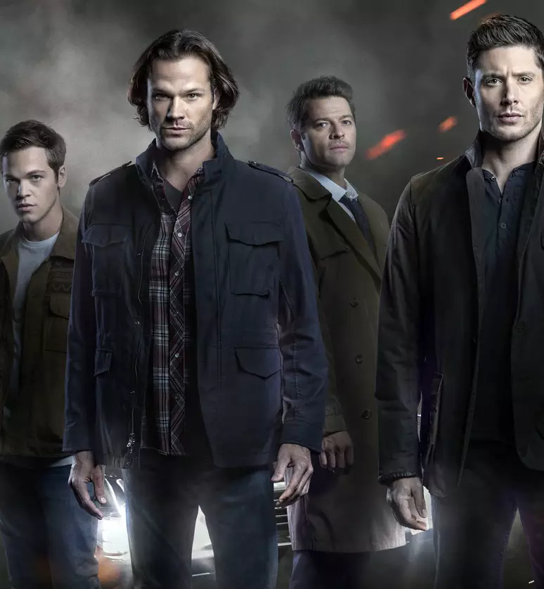

Sinopse de Supernatural
A família Winchester, residente de Lawrence (Kansas), passou por uma tragédia quando Mary Winchester, mãe de Sam e Dean, morreu num incêndio causado por circunstâncias sobrenaturais.

Como resultado, o seu pai, John, dedicou a sua vida a viajar por todo o país para tentar descobrir o que causou a morte da sua mulher e procurar vingança. Ele levou os seus filhos consigo, treinando-os para lutar contra o mal.
Anos mais tarde, Dean continuou com John para o ajudar, enquanto Sam os deixou para estudar na Universidade Stanford. Quando o seu pai desaparece de repente, Dean pede ajuda a Sam para o encontrar, e desde então os irmãos trilham uma jornada.